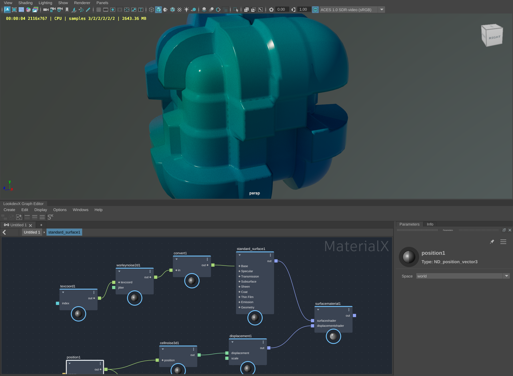
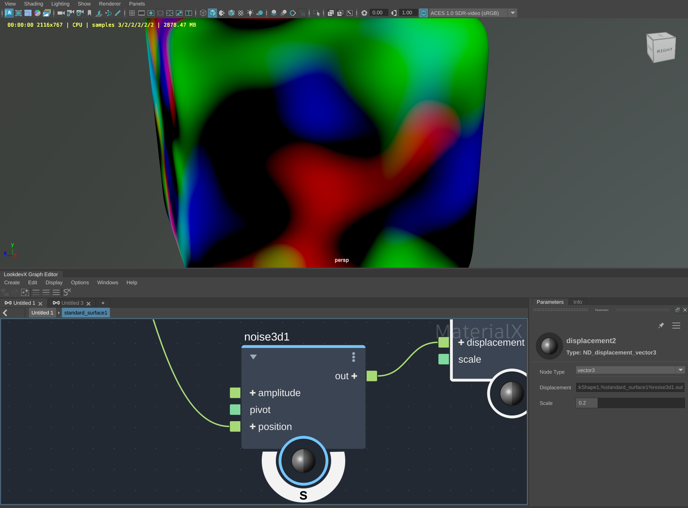
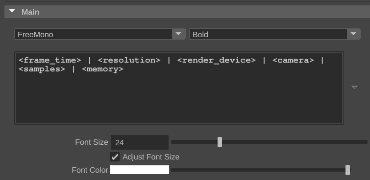
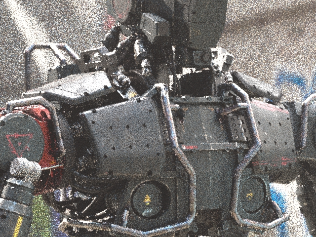

13 December 2023
Note: If you need the bug fixes from MtoA 5.3.5.3 or MtoA 5.3.5.2, please update to MtoA 5.4.1.0
MtoA 5.4.0 introduces Arnold 7.3.0.0.
Important: This version breaks binary compatibility. Shaders, procedurals, and other plugins compiled against older versions of Arnold are not compatible with this version of Arnold and will need to be updated and recompiled.
Download Arnold for Maya from your Autodesk Account. See Download Arnold for more information about downloading MtoA from your Autodesk Account.
Follow these installation instructions.
|  |
| LookDevX MaterialX graph with Displacements |
Soloing individual nodes in the graph
|  |
| Soloing an individual shader in a LookDevX node graph |
|  |
|  | |
| before 7.3.0.0, AA=1 | 7.3.0.0, AA=1 |
||
Improved MaterialX support: Arnold can now render MaterialX node graphs mixing Arnold nodes with MaterialX standard library nodes. DCCs loading the Arnold node definitions benefit from the newly added UI metadata and provide a better user experience. Arnold also now uses MaterialX 1.38.8, this update brings new nodes in the MaterialX standard library, for a full list of changes please see the full release notes. (ARNOLD-14286, ARNOLD-14623, ARNOLD-14513)
Emission and per-light-group AOVs: Per-light-group indirect AOVs no longer include emission. Emissive surfaces now only appear in the "default" light group output. When using emission in shaders, the sum of the light group AOVs will now add up to the beauty pass. (ARNOLD-9453)
Evaluate autobump in SSS on GPU: Autobump will now be evaluated in the SSS computation with the GPU renderer when the sss_use_autobump option is enabled, this matches the behavior when rendering on CPU. (ARNOLD-8494)
Device selection in the Intel Denoiser: It is now possible to toggle between Auto/CPU/GPU for OIDN denoiser imager. Arnold now also provides accurate timing information for the denoiser in the log. (ARNOLD-14524, ARNOLD-14526)
Batch renders now abort on license fail: Arnold now aborts if there is a license error in a batch render. The option abort_on_license_fail is now true by default, and applies to batch renders only. This means you don't have to check rendered image sequences for watermarks. Interactive renders do not abort, and have a watermark on license fail as usual. The environment variable ARNOLD_FORCE_ABORT_ON_LICENSE_FAILoverrides this default behavior (0 = batch and interactive render with watermarks on license fail, 1 = batch and interactive abort on license fail). (ARNOLD-13024)
Add license checkout time to render statistics: The render statistics now include the "license checkout time", which is the time in microseconds spent on license checkout for a specific render. This is useful to users to diagnose long checkout times when rendering in batch. (ARNOLD-13497)
New network server configuration modes in the License Manager: You can now choose a license file or specify a three server redundancy setup on the network server configuration tab in the License Manager. (ARNOLD-14586, ARNOLD-14615)
Updated OCIO version to 2.3.2 in Arnold Render View The version of OpenColorIO has been updated to 2.3.2 (ARNOLD-14700)
Updated Alembic to 1.8.5: The Alembic tools in MtoA now use version 1.8.5 of the Alembic library (MTOA-1688)
Autodesk Analytics Program: A newer version of the Autodesk Analytics Program (ADP) has been integrated into Arnold. This brings stability improvements. (ARNOLD-13805)
Builtin metadata: Nodes and their parameter definitions have been augmented with more metadata that could be useful across DCCs. The metadata that has been included are the following: animateable, default, help, gpu_support, hide, linkable, max/min, softmax/softmin and units. Some of these metadata were previously distributed as separate mtd files in each DCC. (ARNOLD-10265)
Remove _private functions from BSDF API: The functions AiMicrofacetBSDF_private and AiMicrofacetRefractionBSDF_private (included to support dielectric priority) have now been removed from the BSDF API. The functions AiMicrofacetBSDF and AiMicrofacetRefractionBSDF now take dielectric_priority as an optional argument. (ARNOLD-14166)
Expose conductor Fresnel mode as an enum in AiMetalBSDF: AiMetalBSDF has been modified to accept an AtMetalFresnelMode enum argument, selecting between the original "Gulbrandsen" conductor Fresnel model and the new "F82-tint" model. (ARNOLD-14165)
Expose random walk version in the closure API: AiClosureRandomWalkV2BSSRDF has been removed, and instead the existing AiClosureRandomWalkBSSRDF has been modified to accept an AtRandomWalkVersion enum argument, selecting between the original v1 and v2 SSS modes. (ARNOLD-14164)
Expose thin walled transmission in the public BSDF API: AiMicrofacetBSDF has been modified to accept an optional thin_walled_transmission argument, which specifies the fraction of the BSDF considered to represent a thin-walled dielectric. This is used to implement thin-walled transmission in Standard Surfaces. This was previously implemented in a way that circumvented the API, which has been fixed to be more explicit with this change. (ARNOLD-14167)
Provide azimuthal roughness to AidEonBSDF: AidEonBSDF has been modified to accept a roughness_azimuthal argument, specifying the specular roughness for azimuthal scattering specifically. This is in addition to the existing roughness argument specifying the specular roughness for longitudinal scattering. (ARNOLD-8325)
Removed AiADPSetIntroShown() and AiADPDialogStrings(): These deprecated functions were removed from the Arnold API. (ARNOLD-13805)
Change AiUniverseCacheFlush API to receive a non-const universe: The AtUniverse passed into AiUniverseCacheFlush() was changed from const to non-const. (ARNOLD-14548)
Remove deprecated AiGPUCachePopulate functions: Deprecated functions AiGPUCachePopulate(), AiGPUCachePopulateStatus(), AiGPUCachePopulateRemainingSeconds(), and AiGPUCachePopulateTerminate() have been removed. (ARNOLD-14570)
Remove deprecated AiRenderSetCallback function: Deprecated function AiRenderSetCallback() has been removed. (ARNOLD-12583)
MTOA-1449 - Create aiStandardVolume Removed from Atmosphere Menu: The aiStandardVolume shader was removed from the Render Settings > Environment > Atmosphere menu
This version breaks binary compatibility: Shaders, procedurals, and other plugins compiled against older versions of Arnold are not compatible with this version of Arnold and need to be updated and recompiled.
Autodesk Network Licensing version: Arnold 7.3 switches to ARNOL_2025 licensing. (ARNOLD-14292)
ARNOL_2025 licenses.--pk C0PQ1 --pv 2025.0.0.F with the AdskLicensingInstHelper command.abort_on_license_fail defaults to true: Arnold now aborts by default if there is a license error in batch renders. You can revert to the previous behavior by setting the abort_on_license_failto false, or by using the new ARNOLD_FORCE_ABORT_ON_LICENSE_FAIL environment variable. (ARNOLD-10455, ARNOLD-13024)
Emission and per-light-group AOVs: Per-light-group indirect AOVs no longer include emission. (ARNOLD-9453)